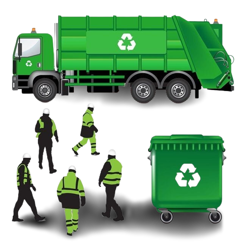

Alur Penukaran Poin
Alur Penukaran Poin
Menjadi Voucher Belanja
-
Login ke Akun Anda:
- Buka situs web Bank Sampah.
- Masuk ke akun Anda menggunakan nama pengguna dan kata sandi.
- Akses Halaman Penukaran Poin:
- Setelah masuk, cari opsi atau halaman yang berkaitan dengan penukaran poin menjadi voucher. Ini mungkin disebut "Penukaran Poin" atau "Voucher Rewards."
- Pilih Voucher yang Diinginkan:
- Jelajahi daftar voucher yang tersedia. Voucher tersebut mungkin mencakup berbagai penawaran, seperti diskon belanja, produk gratis, atau layanan tertentu.
- Lihat Persyaratan Penukaran:
- Setiap voucher mungkin memiliki persyaratan tertentu, seperti jumlah poin yang diperlukan untuk menebusnya atau batas waktu penggunaan. Pastikan Anda membaca persyaratan dengan teliti.
- Pilih Jumlah Poin yang Akan Ditebus:
- Pilih jumlah poin yang ingin Anda tukarkan untuk voucher tersebut. Jumlah ini akan tergantung pada jumlah poin yang Anda miliki dan jumlah yang diperlukan untuk voucher yang Anda pilih.
- Konfirmasi Penukaran:
- Setelah Anda memilih jumlah poin, konfirmasikan penukaran tersebut. Pastikan Anda sudah yakin dengan pilihan Anda.
- Terima Voucher:
- Setelah penukaran poin berhasil, voucher Anda akan tersedia dalam akun Anda. Anda mungkin bisa mengunduhnya dalam format digital atau menerimanya melalui email.
- Gunakan Voucher:
- Gunakan voucher yang Anda terima sesuai dengan persyaratan yang ada. Misalnya, jika itu adalah voucher diskon belanja, gunakan voucher tersebut saat berbelanja di toko yang berpartisipasi.
- Selesaikan Transaksi:
- Setelah menggunakan voucher, pastikan untuk menyelesaikan transaksi dengan cara yang sesuai dengan ketentuan voucher tersebut.
- Cek Sisa Poin:
- Setelah penukaran selesai, cek sisa poin yang Anda miliki untuk mengetahui berapa poin yang masih tersedia untuk ditukarkan atau digunakan di masa mendatang.
- Logout :
- Jangan lupa untuk logout dari akun Anda jika Anda telah menggunakan komputer atau perangkat umum untuk menghindari akses yang tidak sah.